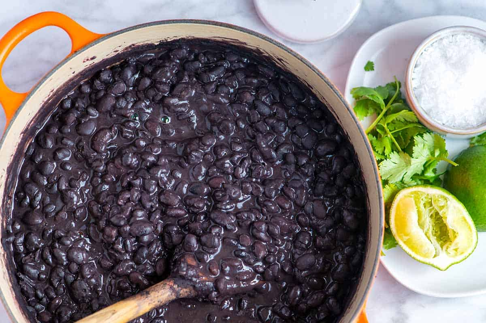

Black Beans

Black beans are a very tasty source of fiber, protein, and antioxidants.
Ingredients
Instructions
- Soak beans in water for at least two hours
- Drain beans after soaking, and add fresh water
-
Cook beans in a pot for at least 30 minutes (You can also use a pressure
cooker)
- Serve beans with a side of rice